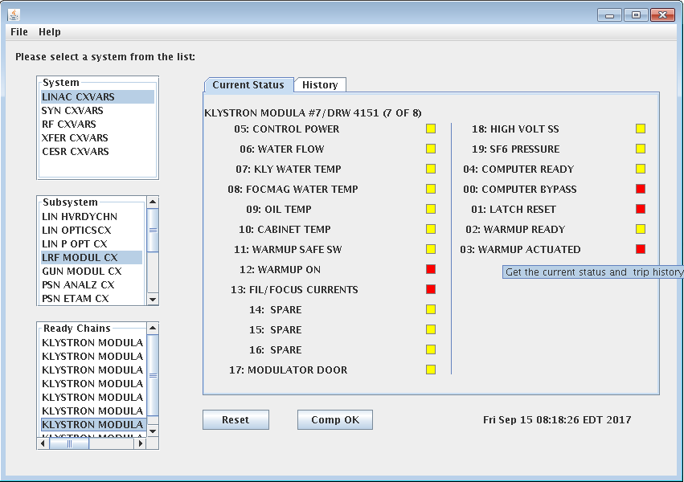

- Writing a MATLAB script at work to handle error diagnostics for Beam
Position Monitors (BPMs), instruments that measure the position of the
particle beam's orbit as it travels around the ring. Sometimes these
detectors fail and require programattic debugging.
- Collaborating with a friend from Cornell's Social Psychology department
on creating a website where users can upload images of their tongues (yes,
tongues) and recieve feedback about their tasting habits, food preferances
and even political persuasion. Utilizes a photo-analysis script from
TongueSim.
- Learning and practicing with JavaFX, Github and other things that catch
my scattered attention...

- Created a Java application that depicts real-time status for
different pieces of hardware inside the particle accelerator.
Specific instruments, such as high-voltage magnets,
have a variety of sensors that monitoring things like temperature,
water-flow and power. These safety elements collectively form a
ready-chain. Instruments won't work if its ready chain is tripped off.
- Also records the trip history for individual chains. A valuable diagnostic tool.
- Allows operators to reset ready-chains during active operation. Momentary
glitches often cause equipment deactivation. If there is no real problem,
the tripped instrument can be remotely reset and restarted, creating
minimal operational interferance.
- Written in Java 1.8 with Netbeans' built-in GUI toolkit.
- Create a calculator app for Vetarinary Medicine, letting the user
quickly perform routine calculations
(like figuring out liquid dilutions).
My fiancee, who is in her last year of vet-school at Cornell, asked
me to
do it :)
- Create a simple game in Java, like snake. A) Becuase I loved to play
Snake on my old Nokia phone, and
B) becuase I think I'll learn a lot of
good coding techniques in the process.